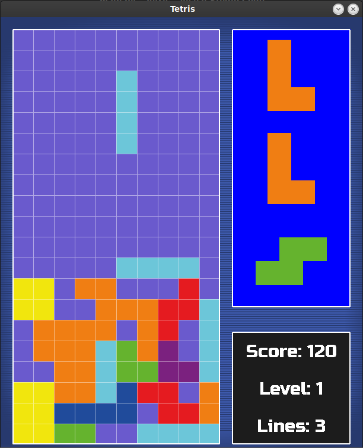

A Tetris clone developed using Pygame,
where I focused on improving my understanding of data structures and algorithms,
particularly for collision detection and Tetromino management.
The game includes features
such as block rotation, line clearing, and dynamic gameplay, offering a solid foundation for
implementing efficient game mechanics and managing game state.